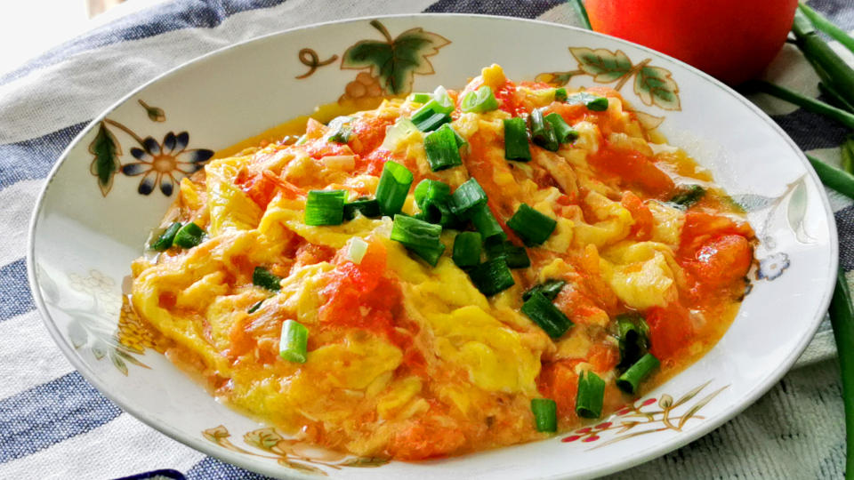

Double Chocolate Cookies
Origin: Michigan Source: Family Recipe Category: Dessert
My daughter learned to make these cookies at a baking camp at Zingermanns and has tweaked the recipe to fit the taste buds of her siblings. They are extremely sugary so the salt helps to balance it. Note, these cookies are best eaten very quickly.
Recipe Ingredients
- Unsalted butter
- Granulated Sugar
- Packed light or dark brown sugar
- Large egg
- Pure vanilla extract
- Semi-sweet chocolate chunks (melted)
- All-purpose flour
- Natural unsweetened cocoa powder
- Baking soda
- Salt
- Semi-sweet chocolate chunks
Recipe Steps
- In a mixing bowl cream together the butter, granulated sugar, and brown sugar
- Add the egg and vanilla extract and beat well
- Add the melted chocolate
- In a separate bowl combine the flour, baking soda, cocoa powder and salt
- Combine the wet and dry ingredients
- Add the unmelted chocolate chunks.
- Form 15 cookies and place on a baking sheet.
- Cook for 12 to 13 minutes at 350 degrees.
Additional Food images


Tomato and Eggs
Origin: China Source: Family Recipe Category: Appetizer This is a quick meal that my mom often makes when she comes home late from work. it's easy to make, fast, and most importantly, delicious. It's great for broke college students as well, since tomato and eggs are pretty cheap.
Recipe Ingredients
- Tomatoes
- Eggs
- Salt
- Sugar
- Cooking oil
Recipe Steps
- Crack eggs into a bowl and mix until scrambled
- Cut tomatoes into pieces around the size of your thumb
- Oil a hot pan and cook the eggs until satisfied then remove the eggs
- Re-oil the pan and cook the tomatoes until they loosen
- Combine eggs and tomatoes and season with salt and sugar
Additional Food images


Chinese Dumplings
Origin: China Source: Family Recipe Category: Appetizer
Chinese dumplings are a classic comfort food and a favorite in our family. Making these dumplings from scratch is a bit of work, but the delicious result is well worth it. They're perfect for special occasions or when you simply crave some homemade goodness.
Recipe Ingredients
- 1 pound ground pork
- 2 cups finely chopped Napa cabbage
- 2 cloves garlic, minced
- 1 tablespoon fresh ginger, grated
- 2 tablespoons soy sauce
- 1 tablespoon sesame oil
- 1 egg, beaten
- 1 package round dumpling wrappers
- Water, for sealing dumplings
- Vegetable oil, for frying
Recipe Steps
- In a large bowl, combine ground pork, chopped Napa cabbage, minced garlic, grated ginger, soy sauce, sesame oil, and beaten egg. Mix until well combined.
- Take a dumpling wrapper and place a spoonful of the pork mixture in the center. Dip your finger in water and moisten the edges of the wrapper. Fold the wrapper in half to create a half-moon shape and press the edges together to seal. You can also create pleats along the edge for a decorative touch.
- Heat vegetable oil in a pan over medium heat. Once hot, add dumplings in a single layer, flat side down. Cook until the bottoms are golden brown, about 2-3 minutes.
- Pour 1/4 cup of water into the pan and immediately cover with a lid. Steam the dumplings for about 5-7 minutes or until the wrappers become translucent and the pork is cooked through.
- Remove the lid and continue cooking until the water evaporates and the bottoms crisp up again.
- Serve hot with a dipping sauce made from soy sauce and vinegar.
Additional Food Images